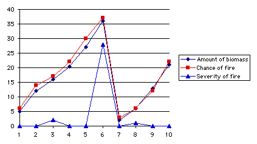
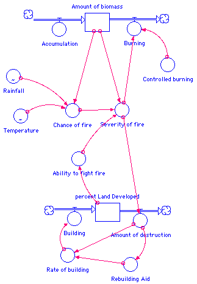

| Index of papers | Phil Gyford: web | email |
| Fall 1999 | |||||
| Systems Approaches | |||||
| A System Model of Fires in the Santa Monica Mountains | PDF version | 1999-11-25 | |||
|
Description "Malibu ... is the wildfire capital of North America and, possibly,
the world. Fire here has a relentless staccato rhythm, syncopated by landslides
and floods. the rugged 22-mile-long coastline is scourged, on the average,
by a large fire (one thousand acres plus) every two and a half years,
and the entire surface area of the western Santa Monica Mountains has
been burnt three times over this century. At least once a decade a blaze
in the chaparral grows into a terrifying firestorm consuming hundreds
of homes in an inexorable advance across the mountains to the sea." These fires are not a random event, and the potential is there for humans to play a large part in controlling them. Before settlers arrived in the area the local inhabitants regularly set fire to areas of the forest in a controlled attempt to burn away the vegetation which accumulated. This dead biomass is a vital fuel for fires and destroying it on a regular basis reduced the chance of accidental, and uncontrollable, fire breaking out. Since 1919 however, there has been an official policy of "total fire suppression," meaning that no fires should be allowed at all. The growing levels of fuel increase the chances of fire breaking out each year. And when fire does occur it's far more severe than it would otherwise be, thanks to the large amount of fuel available. This behaviour is illustrated in the graph below.  The increasing amount of building in the mountains also has an effect on disasters, and not just due to the proximity of humans prone to accidentally starting fires. Fire-fighters have a harder time reaching crucial locations due to the narrow winding roads favoured by the mountains' inhabitants. Also, fire crews must concentrate not only on controlling the fire as a whole but also saving individual houses, tasks which do not always go hand in hand. While many properties have been destroyed over the decades, this has not halted the urbanisation of this wilderness which has been free of any kind of fire-risk zoning. In fact, the disasters only encourage more construction: each one will be followed by re-building with the aid of relaxed landuse regulations and even the fire code. The worst fires will cause the area to be declared a federal disaster area bringing in tax relief and low-interest loans. The Model  Equations
Notes
Graphs (Note: y-axis scales are not equal.) Controlled_burning = 0 Controlled_burning = 0.5 Controlled_burning = 1
|
|||||||||||||||||||||||||||||||||||||||||||||||||
| Index of papers | Phil Gyford: web | email |